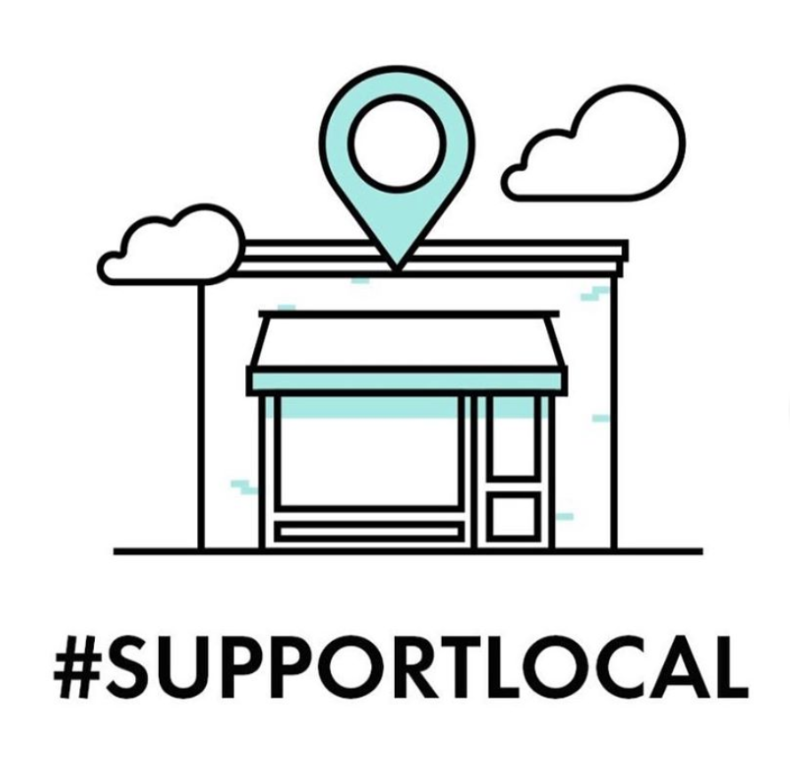

Hola a todos, me llamo Stefi y vivo en Barcelona desde hace 3
años. Durante este tiempo he descubierto pequeños coffee shops
encantadores, restaurantes locales y tiendas de alimentación y
comida.
Mi intención es crear una lista de estos negocios locales de
Barcelona que podrían obtener algo de nuestra ayuda durante
estos momentos tan complicados. Sería terrible ver todos estos
locales tan agradables cerrados el día que podamos salir de
casa...porque sí! Al final vamos a salir de casa!
Algunos de estos locales están abiertos y algunos de ellos
entregan pedidos a domicilio o venden cupones o vales
canjeables.Como todo el mundo sabe, están teniendo problemas
para mantenerse a flote y creo que, en este sentido, podemos
hacer todo lo posible para apoyar estos negocios y a sus
trabajadores. Están tomando muchas precauciones en el servicio
a domicilio y dejan los productos en la puerta para evitar el
contacto.
Si te lo puedes permitir, compra algo. Algunos venden un café
de especialidad espectacular, otros deliciosa pizza o pan. Si
no puedes, quizás puedes compartir esta página o recomendar un
lugar y así podemos ayudar a muchos más.
Muchas gracias ❤️
Como hay detalles para cada lugar, voy a actualizar, siempre
que pueda, esta página web. Si algo no está actualizado, por
favor, contáctame
Añade también un comentario informando del porqué te gusta este lugar y así yo lo puedo añadir en la descripción.
Si eres un pequeño local o negocio y te gustaría estar en esta web, escríbeme un email. Si escribo algo equivocado o con errores, dímelo y lo corregiré.
 Image sourceOrder roasted coffee #FUCKCORONA by emailing: pedidos@hiddencafebcn.com
You can buy their coffee online via email -
info@morrowcoffee.com.
Phone: 931 16 94 36
Instagram
You can order their coffee online via
rightsidecoffee.com
Instagram
One of my favorite coffee shops is closed and to support them
we can buy vouchers for our next brunch at
littleferncafe.com/gift-cards
Please buy some vouchers so when all this is over we can all
have a dance party there.
Order bread and other goodies via WhatsApp: +34 (0) 646 148
647
They update their Instagram with what is available daily
Yellow Bakery Instagram
Address: Carrer de Milà i Fontanals, 9, Barcelona, Spain
Phone: 644 52 20 40
Fantastic organic bakery in Poble Sec led by an Austrian,
South Korean and Catalan team. The baker was at Reykjavik
before. Great variety of different types of grain.
Address:
Carrer de Blai, 59, 08004 Barcelona
Phone: 934 41 58 59
Bakery/ deli con productos Km0 y opciones veganas
Address: Paseo del Born 10
- We encourage you to make preorder and collect in 1 hour.
Call 931546713 or private message from
Instagram
, this way #stayathome more.
- Our lovely shop is very small, we can accept 1 client
inside at a time. Make your order, pay, wait your order
outside, we call you when it´s ready.
- We will be open from 8:30 AM till we sold out.
Bakery/ deli con productos Km0 y opciones veganas
Address:
Rossello 122
Queridos todos!
Nuestra panadería permanecerá abierta bajo las condiciones
de higiene necesarias y en horario reducido 8-14h lunes a
viernes / 9-13h sábados.
Agradecemos llevar a cabo todas las medidas que se
recomiendan para las compras de estos días: Acceso limitado
(2 personas a la vez), distancia prudencial, pago con
tarjeta, no compras de pánico.
Temporalmente recibiremos pedidos vía Whatsapp con un día de
antelación (661564398).
Address:
Gracia: c/del Diluvi 11 932 376 503
Poble Sec: c/nou
de la Rambla 122 930 135 604
Barceloneta: c/d’Andrea Doria 18 930 318 707
PAN ES VIDA! Y NOSOTROS AMAMOS LA VIDA (Y EL PAN)
Dadas las circunstancias "extraordinarias" aplicamos las
instrucciones siguientes :
- nos lavamos las manos muy a menudo (¡tú también, espero!)
- usamos guantes y mascarillas
- gel de manos disponible en tiendas
- la tienda y los utensilios se desinfectan varias veces al
día AYUDANOS A PROTEGERTE!
- Respectar la línea roja para preservar a todos
- Privilegiar los pagos en tarjeta bancaria
¡PERMANECEMOS ABIERTOS PARA SERVIRLE, CON UNA SONRISA!
En CRUIXENT elaboran el pan de forma tradicional conservando
procesos de elaboración adecuados para cada producto
Address:
Carrer Pujades, 173, 08005 Barcelona Metro L4 - Estació
POBLENOU
Phone: +34 93 105 60 47
The might deliver, not sure 100%. Check out:
lafabrique.cat
Address:
Carrer Radas Nº 35 de Barcelona
Open from: 08:00 - 15:00
6€ weekday sustainable, plant-based lunches, freshly made and
delivered to your home
They update their Instagram with what is available daily
Millas Lunch Instagram
Pizzas de masa madre | Fermentación 72h | Ingredientes
ecológicos
Delivered via
Deliveroo
(A partir de las 19:30 y en zonas cercanas al restaurante
~2km~, sentimos las molestias!)
La Balmesina Instagram
TAKEAWAY con base japonesa 🎌
Barcelona: 935 149 090
Order at
teikit.es
TEIKIT Instagram
The make shoes and clothes.
Here is what they shared in their newsletter
" Lo más jodido de la situación, es no ser egoísta. Hay
mucha gente enferma, mucha gente pasándolo mal. Muchas
empresas como nosotros. Por supuesto que no necesitáis
ahora ni unas zapas, ni una camiseta, ni nada de
nada.Porque lo primero, es lo primero.
..
Es posible que en estos días tengamos que lanzar
promociones, no porque queramos ni por vosotros ,sino
porque hemos comprado stock para tener 6 tiendas y nuestra
web a pleno rendimiento. Ahora mismo necesitamos liquidez
para sobrevivir."
Order at
pompeiibrand.com
if you can afford it.
Sustainable & ecofriendly fashion brand. Organic cotton
clothing for woman and kids.
Order at
tiralahilacha.com/en
if you can afford it. (PS. Free shipping)
Fruit and vegetable shop, with some groceries (rice, nuts,
pasta, cookies, vegetable milks). Everything is organic, and
fruit and vegetables are mostly locally grown.
Address: Rambla del Poblenou 19, Phone: +34 623 19 95 36
Address: Av. de la Riera de Cassoles, 37. Local 2. 08012
Barcelona Phone: +34 937 977 486
Comprar en nuestra
#tiendaonline
sin salir de casa (link en la bio). Tenemos servicio
delivery gratuito en Barcelona ciudad a partir de compras
de 15€
Disfruta un descuento del 5% en todas tus compras usando
el código #quedateencasa .